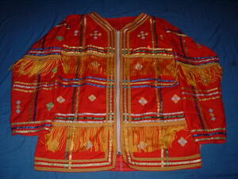

binekad 
/binɔkad/
n.
“Matigsalug_jacket”
n.
the traditional jacket worn by males
Eng. jacket; shirt, traditional; traditional shirt
Online dict status: -
Usage level: F
vi.
for someone (egbibinekad, migbibinekad, imbibinekad, agent, eg><ø-rdpCV-) to wear a traditional colored jacket
Migbibinekad si Datu Anselew te miggendiyè din te Malakanyang.
Datu Anselew wore a traditional jacket when he went to a Malakanyang.
Eng. wear traditional jacket
Online dict status: -
Usage level: M
v.
for a group (egpambibinekad, migpambibinekad/impambibinekad, agent, eg><ø-paN-) to wear a traditional colored jacket
Eng. wear traditional jacket
Online dict status: -
Usage level: M
Updated by: RJH,RUL,QDL,RAA,QDL,RJH,NJK
Last updated: 30/Jul/2011
This page last updated: 03-Jan-2020
Copyright © 2009-2014, Matigsalug Language Christian Association, Inc